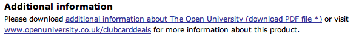

January 26, 2007
Further Reflections on OU Search
A couple of people got back to me about the New OU Search Tools post including an interesting exchange with a current OU student who mentioned how useful it would be to be able to search over the materials from previous courses.
I hadn't thought about this in the context of the new search facility, but it's absolutely spot on.
To be truly valuable, our courses should not just provide scaffolding for teaching a particular topic. They should also serve to act as a useful reference work; and for students embarking on a degree, being able to refer back to earlier course materials to reinforce the teaching of topics that are covered in later courses is exactly what we (as educators) want them to be able to do.
This is not necessarily how it works either in practice, or in principle.
For courses delivered as print material - yes, for sure, students retain access to these materials (unless they sell them via University Book Search) - but they're often inaccessible, stored in the attic or the cupboard under the stairs.
For courses delivered electronically, access to online materials is cut off 2-3 months after the end of a course. The materials are not searchable via the library, even for registered students, and for the HTML delivered courses, it's not necessarily the case that PDF or easy download bundles (chm or zipped archives) are made available, (though I've described elsewhere how it's possible to use the Firefox Scrapbook extension to download OU online courses).
What this means is that students effectively don't own their course materials on the electronically (HTML) delivered courses, whereas they do own the print materials.
PDFs of print based course materials are now increasingly available for download - which as I've pointed out before means students get two permanent copies of print course materials (the print copy itself and the PDF download), and no permanent copies of HTML delivered materials.
I'd heartily recommend students to download these materials whenever they get the chance, and store them in a single OU course materials directory on their computer that is indexed by an effective desktop search tool (such as Google Desktop or Copernic Desktop Search). In this way, you'll build up a searchable archive of OU course materials. Do the same for HTML courses - grab the materials with something like Scrapbook and archive them on your own machine.
There are apparently all sorts of policy issues that are being thrown up by the federated search tool, so it will be interesting to see how they play out...
Reflecting on how the system might be used against itself (trying to lock down ownership of the course content - especially for people who PAID FOR IT - is not going to work folks...) I wonder how personal archiving of materials by be possible within the e-portfolio?
For example, will students will be able to save copies of their course materials as their stuff? (The working name for the e-portfolio is currently My Stuff - check out Guy Carberry's design blog for screenshots. The My Stuff name is - apparently - not much appreciated by students...)
Several things immediately came to my mind simply by asking this question:
- will students be able to lodge PDFs - indeed, any arbitrary file types - in MyStuff? Something like elgg is agnostic, I think, as to what you care to lodge in your portfolio;
- will students get a MyStuff results tab on the search results page when MyStuff is up and running and federated search integrated with it? I think this was hinted at at the VLE Briefing on Tuesday, but I deleted my notes before I got to post them (oops...)
- will students be able to search within PDFs using the MyStuff search tool?
- should we be looking at providing an e-book reader with embedded study support tools, such as annotation tools, for use within the e-portfolio? O'Reilly Safari U e-books can be viewed using an interesting looking reader from Fourteen40
- how long will students retain access to content stored in MyStuff? Again, I think it was suggested at the VLE briefing that students would retain access to their portfolio for two years (2 years after what, I don't recall... completion of their last course, perhaps?) In addition, it was stated that access to the portfolio would continue between course presentations. Which seems sensible, if students haven't stated whether they are on a degree profile or not.
- how much storage space will be made available? will it be free? secure? backed up? Support for third party storage APIs and export-to-desktop is something that has been mooted, I believe, but is not guaranteed. I have heard from several people that the amount of storage that should be provided is causing concern, which concerns me somewhat. I watched the Gmail landing page counting up the megabytes of free storage that's available to users on Gmail today, (I just watched it tick over 2.8 gigabytes), and reckon I must have access to well of 20 gig of free storage round the web, as well as my Amazon S3 account, which I must have spent all of 20p on last month (it was a heavy month ;-). And I also note that online office app providers are starting to work with online storage providers (like Zoho and Omnidrive, for example).
The idea of gaming the portfolio also came to mind - by which I mean students using the portfolio to store electronic copies of course materials - exactly those materials to which student access is cut-off from after 2-3 months.
Alternatively, it may make sense to have an area of MyStuff that automatically stores copies of course materials from presentations the student has studied, (maybe without a bulk export option even). This material could then linger in MyStuff while the student still has access to their e-portfolio. Or maybe, if the student has stated an interest in pursuing a degree programme (rather than one or two courses) this statement flags the retention of course materials within their portfolio. The student's ostensible commitment to a degree programme then provides the 'perk' of legacy course materials within their portfolio.
Breaking the problem of (search) access to course materials down a little further, I think we can identify:
- course materials for courses the student is currently studying (or has recently finished); the time at which course materials become searchable is also related to this. Do students gain access when they register for a course, or a week or two before the course start date (why not 3 weeks in advance, or 4?), or on the actual start date itself?
- course materials from courses the student has previously studied; this is partly addressed in the discussion above relating to preserving access to previously studied materials via the e-portfolio;
- materials from courses the student has not yet studied; preventing students from studying these materials means they cannot skim the materials for a course online, even if they are considering taking that course. Google booksearch and Amazon both support limited browsing of books, so why can't we do the same for our materials. Especially when it's not necessarily the course materials that represent the OU's value proposition.
The easiest way of handling search over these three classes is to let registered students search over all of them - forgetting about access permissions and seeing this as a usability issue - and then provide obvious search limits/filters for previously studied courses and currently studied courses. Maybe inspection - or download - of materials outside these limits needs to be restricted? I don't know...
One final question to think about - if students could search over the whole OU course corpus, and a student studying a level 2 course turned up something relevant from a related level 3 course that they used to improve their understanding of the topic being studied, would we be happy or sad? If they found a level 1 treatment of the subject (in a course the student had not studied) that clarified for the student a misconception about, or unstated assumption in, the level 2 material, would we be happy or sad?
Related to this - are students more or less likely to take follow on courses if they stumble across materials from those courses while researching topics covered in lower level courses?
January 21, 2007
OU Course Discounts with the Tesco Clubcard
...or should that title be: Towards a TescOU? ?!
An interesting announcement I just picked up from an OU student blogger about the forthcoming Tesco Clubcard deal that will allow the use of Tesco Clubcard vouchers in full or part-payment for OU courses: Tesco Education Deals.
[For non-UK readers, Tesco is to UK supermarkets what Google is to web search. Their dominance of the market means they can't help but be evil, as their large stores get larger and their ownership of smaller convenience stores develops apace.]
A couple of interesting things to notice about the announcement. Firstly, the link from the Tesco site is to the OU at www.openuniversity.co.uk/clubcarddeals.

Secondly, the advertising slogan that's being used for the campaign:

I have to admit the first thing I thought of on seeing this was the Planet Dog record label who used the title "Feed Your Head" for several compilations ;-)
Another thing to notice about the landing page is the "Get instant answers" query box, which seems to feed in to a natural language asking, FAQ answering service provided by a company called askadmission, who don't seem to have a working homepage at the moment. Googling them turns up several academic institutions who use the service, which seems to run under the "Virtual Advisor" brand.
The OU landing page for this QnA service is here; although an OU branded page is offered for the resutls, you still see the askadmission URL, which is a bit scrappy.
Back to the Tesco deal, and it's informative to see who else has signed up to their education products:
I wonder when Tesco will start selling education products, as well as finance deals, telecoms services and "own brand" software at their supermarket cash tills?
This isn't necessarily as far-fetched as it sounds - Tesco already run Tesco Debut - which offers "on-line training and development, financial guidance, discounts and career advice to help 16-24 year-olds through the transition from full-time education to full-time careers."
And get this - "So far, 21,071 students have become members of Debut, and we have launched our Debut Clearing House scheme, which organises transfers for students between their home stores and stores local to their university." Ah, bless...
(If you know anyone who can get me screenshots from inside the site, I'd be interested to see them. Maybe I need to set up a Tesco Blogoscoped site to track this sort of stuff?)
Anyway - back to the Clubcard site: at the moment the OU is one of five items listed in the Tesco education deals area, the others being Brilliant Books, Linguaphone (who get two entries for some reason) and The National Extension College.
As the Tesco deals give you £10 worth of tokens for every £2.50 worth of tokens ('earned' at a conversion rate of 1 pence per point, and 1 point per pound spent) I'd be interested to know how the cash flows for making up the 4:1 exchange rate (and what HEFCE might have to say about that ;-)
What with OU Gift Vouchers as well as Tesco Clubcard vouchers, I'm starting to wonder again just what it is we sell, exactly?
December 15, 2006
OU Region Identifier Web Service
When I discovered that the OU regional offices had their own IP ranges, I thought it might be OUseful to knock up a small web service that would return the corresponding region number. This service can then be used to help customise the return of content that is tuned to a particular region.
I haven't thought of any useful applications of this yet, except this crude demo page that will forward the user to the corresponding regional office page (such as this one for Region 04) if they try to view it from an OU regional office.
Anyway - for what it's worth, here's the link: IP address to OU regional office identifier service.
The information is returned in the form:
<pingBack>
<ipAddress> 123.25.67.89 </ipAddress>
<ouLocation> RegionNN </ouLocation>
</pingBack>
Here's a demo.
If you're in an OU regional office, a visit to this page should tell you which:-)
If you know of - or can think of - services that would benefit or support regional office localisation, let me know...
If you want to use the service, mail me, and I'll give you a stable URL for the service.
October 24, 2006
Is Google Custom Search OUseful?
Maybe...
Here are a few ways of using Google Custom Search that came immediately to my mind:
- For collecting links in a course team while a course is in production. We could do this with a social bookmarking tool, of course, but search is easier... and getting new domains into the search engine is just a case of bookmarking them, really...
- For providing a course search engine, in which all the external links mentioned in a course (particularly online courses) are used to prioritise results in an otherwise general Google search;
- As a place for students to contribute useful links to a course specific search engine. This might include links to tutorials and additional material discovered by the students.
October 18, 2006
Portable OU
Are these the first signs of a changing attitude towards protable media, I wonder? At least two courses I know of now provide students with portable devices as part of the supplied course materials: TU120 Beyond Google sends out a 256Mb MP3 player to students at the start of the course, and the T885 Team Engineering students leave the weekend residential school at the start of their course with a 256Mb USB memory stick (and a webcam, too...).
The devices are OU branded, as these photos of the USB memory stick and the MP3 player show (I'll add a pic of the T885 memory stick to this post as soon as I get one):


The T885 memory stick is not preloaded with anything, although I believe students do load photos onto it during the residential school, that they must take away and then share somehow. T885 is exploring all sorts of social software tools - blogs, wikis, maybe even flickr?, and I hope to post more about it in the coming weeks...
The TU120 MP3 player does comes preloaded with some audio files recorded by the course team and used within the course. As such, the player is used to deliver content to students, as well as providing them with a portable - and standalone - means of consuming it.
However, the TU120 MP3 player is not preloaded with any software (though it could be...) although the mailing the player is sent out with does contain the OU Online Applications CD (which I've mentioned several times previously).
As I have the current CD handy, here are a few screenshot from the installer to show what's on it:


As far as I know, the Firefox installation is a vanilla one - i.e. I don't think there are any OU customisations applied to it.
I've been thinking for some time about what Firefox customisations we might usefully provide, either as extensions, or preloaded into an OU distributed Firefox installation package and I hope to post some demos relating to that topic in the next 2 to 3 weeks...
September 06, 2006
OU in the Blogosphere
Chatting to someone last week about opinmind, a sentiment analysing blog search tool, we idly wondered whether anyone in the Communications or Student Services departments at the OU occasionally looked at things like opinmind search on "open university", or similar searches on general blogsearch engines such as Sphere, more specifically via spaces like Blogger or using site limited searches, such as this one on MySpace.
We suspected not...
Anyway, I just had a quick look and turned up various interesting things I didn't know about.
For example, someone had picked up that a new OU course on elearning - The eLearning Professional is now being advertised for a September 2007 start. I think this is being written from IET, which does a lot of worthy stuff in the area of elearning/educational technology research. It'll be interesting whether the systems critiqued in the course include the OU's Moodle VLE, which will almost definitely play some role in the delivery - or student experience - of H808 ...
Something else that turned up was a post about a "new web-based system which allows students studying for postgraduate computing qualifications to choose or propose their dissertation topics online." Going under the name of PADS, it offers a listing of project titles available for students to pursue, and presumably some administration tools. PADS doesn't seem to appear anywhere on the IET Knowledge Network, though it does just about make it via a news story onto the first page of the intranet search results.
PADS seems to have been developed outside the current raft of institutionally sponsored internal IT projects, like the VLE and ECM programmes, so I wonder how well it will integrate with them ;-)
Anyway, I guess this approach of having to look to the blogosphere outside the OU to find out what's interesting going on inside it is the networked equivalent of attending international conferences in order to stand a chance of meeting other staff from the same organisation who are working in similar areas to you!
September 04, 2006
Course Related Mobile Sites
This is a really lazy post describing a demo (and obsolete!) mobile WAP site for students currently studying an OU course, cut and pasted from here but while it's 5 years or so old as far as I'm concerned, it may be of interest to people who are starting to look at mobile sites again.
When I built the site, it provided an interesting exercise in identifying what sort of content could be sensibly and OUsefully delivered via a small screen, in this case using WAP pages (though I did also get half-way through building an SMS equivalent, which really concetrated the mind in terms of character count!)
A year or so later, I put together another website, this time targetted at potential rather than current (on a course) students: Technology Short Course Program (TSCP) Experimental WAP Service.
It was brought to mind by Zinadoo, a basic and easy-to-use mobile web page builder, which made me think that I haven't tried building a mobile site for ages...
After a temporary welcome screen, users are presented with the WAP service home-page: |  |
 | The T396 Overview provides information for students interested in taking T396. This information mirrors that provided on the Courses and Qualifications website for T396. In particular, it includes administrative information (course level, the number of credit points, etc.) as well as a short summary of the course. |
 |  |
A wide variety of information is provided for currently enrolled students. This includes alerts regarding Stop Press information that has been made available, information regarding the status of course related mailings and the dates of TMA of deadlines. |  |
 |  |
 | An additional page identifies the current, previous and next topic of study, with reference to the Study Calendar for the course. |
I think an SMS strategy is currently being looked at in the OU by student services, and mobile Moodle of some sort is also on the cards, I think, but I've not heard - or seen - anything definite as yet...
If any OU readers know about OUr mobile strategy, I'd be keen to hear about it... :-)
August 16, 2006
Course Related Blogging
How can we use blogs to maximum effect in an OU course context? In When Your Past Comes to Haunt You, I posted a news item about the recent AOL search data release that would potentially have been of interest to students studying Beyond Google, if it had been in presentation at the moment, or of interest to alumni of that course as an 'alumni updating' service.
As it is, Beyond Google does not present for the first time until October, 2006; and as the course is still in production, there has been time to integrate the story of AOL's release of search data to the web into the course text.
At the end of that post, I also included what amounted to a text ad for the course, although I didn't go so far as adding a graphical banner ad!
Here, then, are several potential ways of gaining OUse-value from a blog post:
- as a benefit to students, through pthe provision of enrichment material for students currently studying the course; that is, material that is optional and not assessable, but which provides and alternative way of looking at concepts or issues introduced in the course through relating them to contemporary news items;
- as a benefit to alumni students, as updating material (think of this as a free upgrade to some software you have purchased);
- as a benefit to potential students, leading them to a course that they were otherwise unaware of as the result of coming across a post in a subject they are interested in, or searching around;
- as a benefit to the wider community, as material that becomes discoverable via a search engine hence potentially the answer to somebody's search query;
- as a benefit to the course team, through providing draft content that can potentially be included in future presentations of the course, as well as maintaining current awareness within the course team about the state of the contemporary search landscape.
Integrating 'live' posts - that is, course content created whilst a course is in presentation - within the course as a topic scheduled for study by students as a timetabled item on the course calendar is another possibility, although it raises many issues regarding the design of a) the course materials, and also b) any related assessment material.
Typically, assessment material is completed before the start of the course. The OU Technology short course model means that all the assessment material for the course is provided to the students at the start of the course - an open book, known item assessment(?) strategy.
Writing assessment materials that can cope with content that has not been written at the time assessment material is prepared poses certain challenges, although strategies are available for phrasing such material. For example, questions may be asked along the lines of:
"Choose one of the posts that appeared on the Beoyond Google post between course start date and assessment submission date. What were the major issues/technical innovations described in the post? How are these likely to affect the current search landscape?"
Okay - so that's a bit contrived. But it's a pointer to the sort of question we might ask. (The Technology Short Course Programme courses are aimed in part at recruitment to undergraduate study from under-represented groups and adult returners to education, so the assessment style is intended to help develop study skills and encourage reflective learning as much as anything.)
Another approach might be to associate a question with a blog post at the time the post is written, and feed that into the assessment engine as an optional question. One problem with this approach is that it means students addressing the assessment at different times may effectvely be presented with different question papers.
However, where students are required to pick '2 from 3' questions in a traditional assessment, they are then essentially answering different questions for assessment (quamark giving) purposes.
And more importantly, if we are to start exploring personalised, emi-automated, rolling assessment, then this might provide one way of feeding new questions into the question bank and reducing opportunities for plagiarism, for example by requiring students to answer m from n course blog post related questions from a p week window occurring within the period of time they are registered on the course.
The scope for innovation in all sorts of areas is huge at the moment, but I fear that we are not exploring, or even scoping, the possibilities as passionately as we might be...
May 26, 2006
O'Reilly SafariU
On Wednesday, we had a presentation from CJ Rayhill, CIO at O'Reilly's SafariU 'self-service, text book on demand' website. Here are some lightly edited notes from the session...
How could O'Reilly help out in academic publishing?
Been around for 25 yrs, now a media company, not just a book publisher.
As well as printed content, are O'Reilly are into conferences and developer communities (like ONLamp.com and XML.com).
SafariU is a free service to academia, providing free access to O'Reilly materials, mix and match contact, also in assocation with academic's own material, delivery in print or online. SafariU also includes a learning object exchange, plus shareable playlists.
SafariU driven by the idea that there must be a better way to deliver reference materials to students than high cost textbooks.
Consultation with users (academics?) suggests they desire:
- One stop shop
- Mix and match
- Upload own materials
- Combine materials
- Online or print
- Share compilations
O'Reilly-
Online library (safari books online 50% owned each O'Reilly and Pearson) - separate to O'Reilly
Bureau van Dijk, Belgium, host O'Reilly Safari bookshelf.
SafariU - went into beta 01/2005, redesigned from ground up following beta
MarkLogic XML server is the core component at heart of SafariU.
SafariU came out of beta 3/06 - www.safariu.com
Business model: free to academics, but student body must consume a certain amount of material ($700 per year) over the course of a year. O'Reilly sell print-on-demand (POD) versions of textbooks to resellers (e.g. campus bookshop) $0.16 per page (print); or online service (pay-per-time)).
If course uses e.g. material from several books and articles, with snippets of material provided by instructor, the student sees links to the full source books (presumabaly so they can then read/buy into those).
So the student pays to access the content...[hmm - in OU, we tend to provide the majority of third party content, e.g. course readers etc. as part of course, though there is a mixed model across OU wrt text books being bundled with course materials or student self-purchased.]
But there are also corporate payment/access mechanisms (?)
SafariX (Pearson) - multi-subject, textbook only service; student access to online equivalent of textbook for 50% of print cost. Thomson NETg appears to be another player in the area...
XML.com (and other O'Reilly web properties) etc. can be searched over from SafariU.
Within SafariU, academics bundle content in projects. 5 steps in building project:
- gather material
- organise material (drag and drop interface, estimated page count, estimated cost to student)
- print options (cover customisation, use own logos, binding options)
- review (e.g. generate inspection PDF copy) - can at this point go back to step 2,2;
- reorder/reorganise material, index and contents will then be regenerated interactively
order (generates ISBN)
Projects may be public or private (private for own use/own student use), public can be shared.
Looking to experiment with offline viewing options - e.g. socially motivated context (shareable annotations, comments)
Can't modify content (rights), but can write your own bridges. Can also import third party material if you clear rights and make it private.
In print version, each extracted section is branded at start of section wiith original source.
SafariU native (non-uploaded) content internally stored as XML [so we could get XML output...?]
Autodesk interested in the SafariU platform (not the content) so SafariU will be providing platform services for Autodesk...
[is there going to be an API?]
No e-commerce layer at the moment. But e.g. a trainer might have a private project, print copies of the book, and then resell them privately. [Hmmm, how does the copyright work there?]
Compilation is property of SafariU, but original content is retained by author. [So we wouldn't own the rights to any compilation we produced? Hmmm...]
User uploads of PDF only (to prevent users e.g. uploading powerpoint with animations etc.)
But - there will be links out to multimedia materials.
No repagination of uploaded material BUT repagination of the native (XML) SafariU content. (Some guidance to style provided.)
Generate dynamic table of contents and index; no bibliography generation(?).
Won't index uploaded PDFs (yet) or some of the old, originally uploaded Pearson content (which omitted index terms).
docbook format, XML mind editor used internally, future potential for contributor upload of XML as well as current PDF upload.
No limit on amount that can be taken from one book.
Minimum print book order number 10
min page count 100
max page count 820
After one print run, and delivery of course, instructor can go back in and revise content, reprint etc [same book but different edition? would the book get a new ISBN that's viewable via xISBN for example?]
At tmoment, if original source material included in compilation were uploaded, the compiler does not get an alert, but this may be something for the future.
?What about errata? No notification/feed thru of errata to sites/collections where content is used - yet...
Online: within a syllabus, content from up to 10 book titles.
Able to see which students have logged in to the syllabus.
SafariU - just a content delivery mechanism - not a full LMS.
Students want an offline option - what that might be is being explored - e.g. options that support highlighting, annotation etc. Value added, not just PDF.
Untethered options (??), offline use is current priority.
SafariU environment can be customised (cf. Autodesk relationship), so O'Reilly could host an OU look and feel SafariU environment for the OU.
Exploring federated search options (but then there are likely to be copyright hassles with reusing third party material not contained in SafariU).
SafariU/books online cleared for international use.
??bookshare.org - they can get SafariU content. [?Bookshare? - hmm - "Bookshare.org dramatically increases the accessibility of books for people with visual or other print disabilities." Maybe something the OU should look at?]
O'Reilly likes bookshare.
Search underlying SafariU will be reused to search O'Reilly in general.
Possible to purchase rights to republish x copies of someone else's book, upload those into a private project and integrate them with SafariU materials.
SafariU is a self-service, interactive offering.
NH: OU way is not me as academic putting together a course; it's me as academic in a CT doing some things, but other stuff gets done by/control passes to other people.
Costs are scarey for OU (scaleable) use.
Potential for shared authentication between OU students authenticated into Moodle and across to SafariU (perhaps branded in OU way and provided as content page withing Moodle).
NH: How does OU business model change if we go down SafariU route (e.g. no need to purchase, warehouse and ship several thousand copies of a book over several years).
[??expensive to recruit students - could federated search into our content help with recruitment and contribute to a reduction in this cost?]
[Could we guesstimate numbers of books required, get them printed and have them shipped to Amazon's MK warehouse???;-) Set-up some sort of just-in-time/just-after-order print model with despatch to Amazon for fulfillment when enough orders are in? What's the POD turnaround time?]
?OU going to move towards sourcing more and more comtent from outside.
O'Reilly moving away from pure publishing more into a service for educators.
Small amount of OU Business School is produced as print-on-demand already.
[
The term "print on demand" within the publishing industry has become almost entirely linked to publisher’s needs for rapid production of single copies to fulfil single orders. This is probably not a huge need for the University though Materials Procurement has been supplying the Business School with supplementary materials produced as print on demand.]
JC - 3 yr update cycle not sustaible.
NH - you think it'll change in next 5 yrs...?
JC: shorter update cycle will happen
NH: should - should happen...but it won't...not quickly...
O'Reilly talking to iTunesU about potential collaboration. [Hmmm - something else to add to the corporate academic computer services mix!]
OU library - 15 concurrent users to Safari books online via Proquest [see: ISBN Safari lookup Greasmonkey script], which doesn't suit the OU in terms of cost/concurrent users etc. (important for a university with 180, 000 online students).
Interesting model would be for course to provide online material, and give student freedom to select and pay for the 'send me a printed copy' version.
OU has deal with Harvard Business School press to gain 1-click access to HBS materials. [Hmm - couldn't find a particular reference to that in the Library - maybe just 'yet another e-collection'?]
Learning Lab - online course product from O'Reilly??? Hands-on online environment for providing students access to virtual sys admin simulators etc. Covers programming languages, server admin, operating systems etc. [need to look at this...]
Current OU business model - e.g. course costings tool - just couldn't countenance using SafariU like methods.
See also O'Reilly SafariU case study
Safari Books online via Library still likely to be useful in addition to SafariU (though Safari online is v expensive and limited to 15(?) concurrent seats).
Two-dimensional view of publishing: free-premium content on one axis, atomised-packaged content on the other. Market would like free-atomised, textbooks traditionally premium-packaged.
However, textbook model does not necessarily reflect usage (e.g. read sections 2-3 of chapter one, and sections 4-7 of chapter 2 - most(!) people don't read textbooks like novels).
[A lot to think about here in terms of remodelling OU production and delivery processes...]
PS if you're the podcast listening type, check out this conversation between Jon Udell and CJ Rayhill about Safari U and technology in education.
May 23, 2006
University Challenge - Growing Your Audience
When it was originally founded, the Open University mission was in part to take Higher Education to the people other HEI's couldn't reach - from the start, our mission was a one of widening particpation. In recent years, widening participation has become a matter of general concern across the HE sector as a whole, as well as focussing attention even within the OU (internal readers can check out the Centre for Widening Particpation, for example).
Faced with this competition for attracting students from various minority (and even majority) groups, I wonder if there is another target group for widening participation that is emerging as a result of lifelong learning inititatives.
To step back for a minute, one of the aims of widening participation is to make Higher Education available to people who, for whatever reason, haven't had the opportunity or encouragement to benefit from it.
So what's the potentially missing group? How about lifelong learners who would benefit from a continued relationship with Higher Education throughout their lifetime. What I'm thinking of here are people who need - or would just like - to either maintain current awareness in, or benefit from enrichment of, a particular subject area, source a continual programme of knowledge or skills updating (either work or leisure related) or even (!) learn about new subject areas.
(Note that there is a difference in kind between learners who are graduates compared with students who are new to HE - the level of their study skills (graduates should require less study skills training!) so perhaps invoking this audience as a candidate for WP is not really appropriate...)
There are post-undergraduate options available to learners , of course - second degrees, higher (Masters level) degrees and CPD (Continuing Professional Development) courses (here's the OU scheme, for example), of which the CPD courses are perhaps the most suited to lifelong learning.
But what I have in mind is more of a subscription model to learning, akin to subscribing to a news feed. For example, several OU courses are exploring the use of course team blogs in part for enrichment of courses. This is not something that has been a major feature of standalone OU courses to date, but it is something that is in the air at the moment. One of the opportunities that arises from enrichment (and news related) topics in a course blog is that they are meaningful to a wider audience, such as the course alumni. So for students who are actually interested in the subject matter of the courses they have done, what I'd like to imagine is that they maintain their feed subscriptions when they finish the course (and pehaps graduate with a feedrool/blogroll that incorporates feeds from at least some of the courses they have studied).
This model - that gettting students to subscribe to a course feed - is part of a longer play that extends way beyond the time the student actually spends on a particular course. And this in turn should perhaps make us question how we would want students to subscribe to feeds when they first start a course:
- if the feed is delivered seemlessly in a course area of the VLE, why would students take a subscription away at the end of the course?
- if the feed is delivered seemlessly to a personal area of the VLE, with automatic subscription to the feed when the student starts the course, but requires them to unsubscribe when they no longer want it (and perhaps they aren't allowed to unsubscribe till they finish/withdraw form the course?;-) then why would they take the feed away when they graduate? (Perhaps we'd give then an OPML file when they leave?)
- if the students have to subscribe to the feed in a personal feedreader, outside the VLE, most won't...
As well as maintaining a relationship with its own graduates, I wonder too how an HEI might go about pitching for the lifelong learners who graduated from elsewhere, but for whom consuming top-up, or even just enrichment, educational materials represents just another part of their everday media consumption habit.
For example, think of a degree programme as like a TV season (i.e. a bunch of related programming that a channel hopes will retain it's audeince). How do channels (i.e. HEIs) a) retain audience; and b) steal audience from other channels?
Posting on The changing media business model, Forrester's Charlene Li observes:
But what I think best typifies News.com's unique approach is their "Extra" section. It started as "More News From Around The Web" where the editors selected top stories from other sites. It's evolved into a place where you can read about tech stories from all around the Web, even if CNET's News.com isn't covering it. So there's an article wireless technology from Business 2.0, and a story on Steve Ballmer's comments on Vista includes a link to the News.com story, as well as links to stories from competitors like TechNewsWorld, PCWorld, and Wired News.That's akin to The New York Times linking to the New York Post, The San Francisco Chronicle linking to The San Jose Mercury News, and dare I say it, Forrester linking to Jupiter or Gartner! But if you take the social computing view that as a publisher, you can't serve ALL of the needs of your customer yourself, then the best that you should do is to be the FIRST source of information for your audience. In that way, News.com ensures that although it may not be the ONLY source of technology news, it has a fighting chance of filtering and aggregating that news for its audience better than anyone else.
Hmm...so we need compelling content, and we need to be willing to link outside.
Is the Open Content Initiative a candidate for this I wonder? I guess that very much depends on the extent to which they develop the social portal aspect of it...
April 24, 2006
Customer Participation at Amazon.com
Ever since posting a quick review of the OU course catalogue (OU Course Catalogue Takes Lead from Amazon?) I've been meaning to have a scan through the Amazon.com site to have a look at their tags'n'wiki features.
As it's the (first) end of a long day (before the evening and midnight oil sessions begin:-( I thought I'd spend coffee time seeing just what they've been up to...here's what I found (using no page in particular):
Tags 
A typical implementation, it seems: tags may be public or private and used for personal, or shared/social, (re)discovery of an item. Tags can be used for pivot searching - finding items similar to one you have tagged in a particular way by means of looking at what else has been tagged the same way, defining persoanlly meaningful categories and so on. Tagged/bookmarked items can be used as an informal 'not quite Wish List', although it seems that [i]tems you tag will be used as sources from which to make personalized recommendations..

I'm not sure how useful these tags are, or whether tags would be appropriate in an OU setting if applied to courses/for course choice? Certainly they are useful within a course, when used to bookmark resources relevant to a course, but for course choice, (which is intended to be the focus of this comparison between Amazon and OU catalogues) I think not...
Wikis
Two types of wiki entry are supported: wiki term definitions, which are entries that may be relevant across a wide variety of product wiki entries - for example, author biographies or details of a publishing house; and product wiki entries, which are tied to a particular product.

I'm not sure what happens in the case of different versions of the same product (e.g. the same book with different ISBN numbers, or the same piece of music/opera performed by different people?).
From their advice, Amazon try to make it clear that they expect wiki entries to be a different sort of beast to customer reviews:
What Should You Put In A Wiki? Think of a Wiki as an encyclopedia entry that everyone who comes to the page will read. You should put in relevant factual information that you believe will be of value to others who visit the page. A Wiki is not the place to express your opinion; that's what Customer Reviews and Customer Discussions are for. As always, please treat the Amazon community with respect by not writing inappropriate or off-topic comments.
Another point of difference between the wiki and customer review entries is the provision of a Wiki Search box, which "enables you to search inside Amazon Customer-edited wikis. Searches can be performed across all wikis, or across product wikis (wikis that appear in the product detail pages), or across wiki term definitions."
I'd be intrigued to see what sort of content might appear in a wiki associated with a particular course page in the course catalogue...
Product Forums/Customer Discussion
One customer participation service I hadn't picked up on from the blogosphere is Product Forums (which Amazon describe as Customer Discussions).

In the OU, we have hundreds - if not thousands - of internal forums (i.e. First Class conferences). Conferences associated with the majority - if not all - of running courses, are open only to students registered on those courses, but alumni conferences for particular courses are also popular, as historically were course choice conferences. With the increasing availability of public course comment, I'm not sure how the course choice confreences are faring now.
Just by the by, it's interesting to see what Amazon's user policy in terms of how who's allowed to use the forums:
Who can participate in discussions? Customers! Anyone who has purchased items from Amazon.com and is in good standing in the Amazon community can reply to an existing discussion or start a new one. All visitors to Amazon.com can read any current discussion.
So in OU terms, I guess this would be current and alumni students?
Summary
After this quick look through some of Amazon's community features that wrap product items, I'm not convinced that they'd be very useful in the context of the OU course catalogue. However, they may be appropriate for the OU library catalogue, or more likely the OCI (Open Content Initiative) repository, these features may be interesting, e.g. if 'learning objects' within the repository are treated in a similar way to Amazon catalogue items...
April 19, 2006
Promoting Online Services
Just a quick post to capture how Google are attempting to entice students (presumably) to use the whole range of Google services as part of their college life: Google College Life

The design is quite slick - I wonder if we should do the same for the OU library, or the new Moodle VLE?